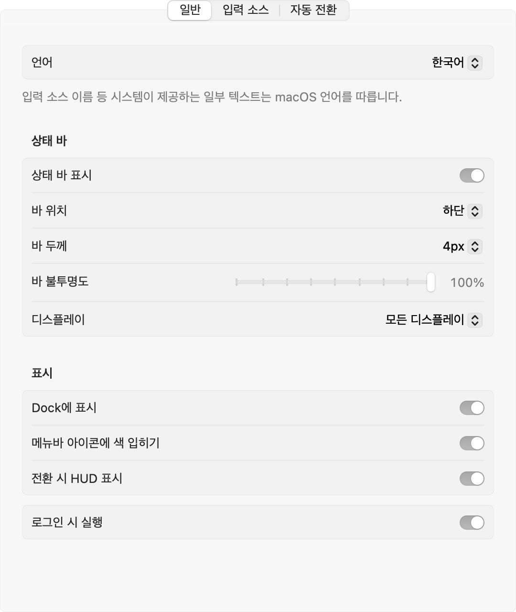
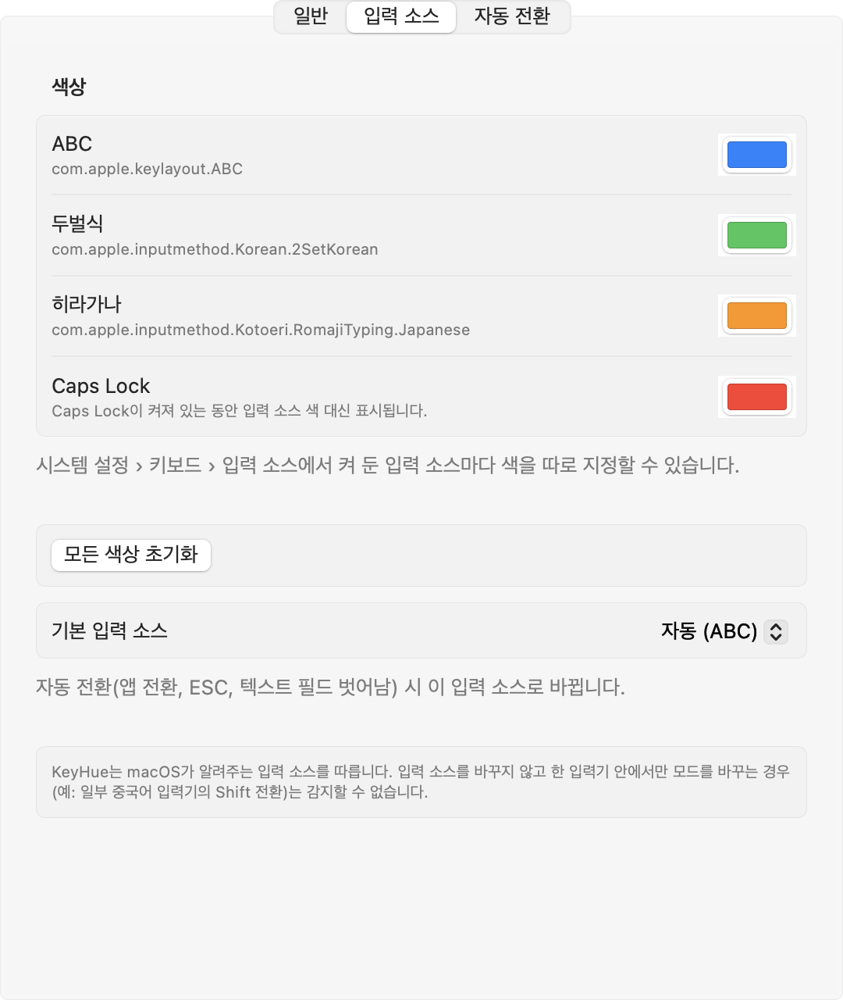
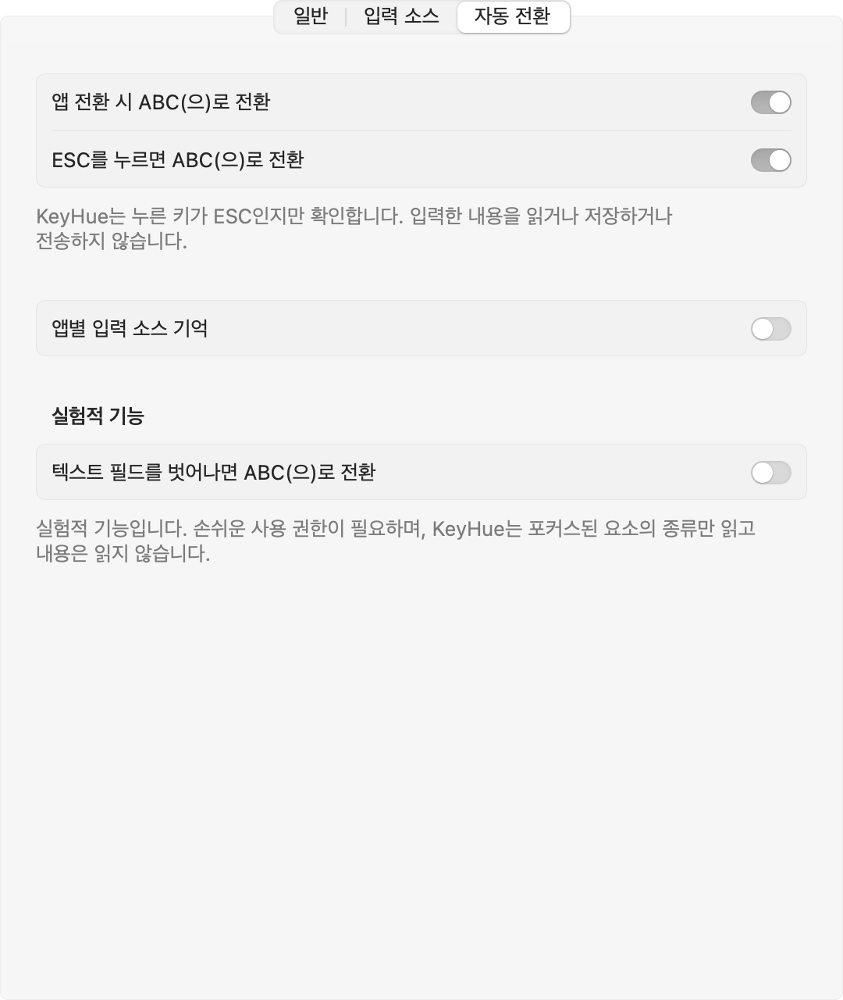

KeyHue 사용 설명서
KeyHue는 지금 Mac이 쓰고 있는 입력 소스를 화면 가장자리의 얇은 색 선으로 보여줍니다. 타이핑하기 전에 한글인지 영문인지(또는 일본어, 러시아어…) 알 수 있습니다.
설치
- 내려받기
KeyHue.zip(항상 최신 버전)을 받아 압축을 풉니다.
- 응용 프로그램 폴더로 옮기기
KeyHue.app을 응용 프로그램 폴더로 끌어다 놓습니다. macOS 13 Ventura 이상, Apple silicon과 Intel에서 동작합니다.
- 실행 허용하기
KeyHue는 Apple Developer ID 서명이 없어서, 처음 실행할 때 macOS가 막습니다.
- macOS 15 Sequoia 이상: KeyHue를 한 번 엽니다. 열 수 없다는 안내가 나오면 완료를 누릅니다. 그다음 시스템 설정 › 개인정보 보호 및 보안에서 아래로 내려 그래도 열기를 누릅니다.
- macOS 13–14: KeyHue.app을 Control-클릭(또는 우클릭)해 열기를 고르고, 대화상자에서 한 번 더 열기를 누릅니다.
- 또는 터미널에서:
xattr -dr com.apple.quarantine /Applications/KeyHue.app
버전마다 한 번만 하면 됩니다.
처음 실행
KeyHue는 두 곳에 나타납니다. Dock의 앱 아이콘과, 메뉴바 시계 근처의 카멜레온입니다. 카멜레온은 현재 입력 소스의 색을 띱니다. Dock 아이콘을 누르거나 KeyHue를 다시 실행하면 설정 창이 열립니다. 메뉴바에만 두고 싶다면 Dock에 표시를 끄세요.
모든 모니터의 아래쪽 가장자리에 얇은 선이 나타납니다. 평소처럼 입력 소스를 바꿔 보세요(한/A 키, Caps Lock, Control-Space). 선의 색이 바뀝니다.
한/영 키를 눌렀는데 색이 그대로라면 실제로는 전환되지 않은 것입니다. KeyHue는 macOS가 실제로 선택한 입력 소스만 보여줍니다.
색 읽는 법
시스템 설정 › 키보드 › 입력 소스에서 켜 둔 입력 소스마다 색이 있습니다. 직접 고르기 전까지는 이 색을 씁니다.
- 파랑: ABC, U.S., German, Dvorak 등 영문 배열
- 초록: 한국어
- 주황: 일본어
- 보라: 중국어
- 청록: 러시아어 등 키릴 문자
- 빨강: Caps Lock이 켜져 있음. 어떤 입력 소스 색보다 우선합니다.
그 밖의 언어에도 자동으로 색이 정해지고, 매번 같은 색이 나옵니다. 빨강은 Caps Lock 전용입니다.
메뉴
카멜레온을 누르면 메뉴가 열립니다. ✓ 표시가 있는 항목은 켜져 있는 것입니다.
| 항목 | 하는 일 |
|---|---|
| 현재 입력 | KeyHue가 지금 보고 있는 입력 소스와 그 색. |
| 상태 바 표시 | 색 선을 보이거나 숨깁니다. |
| 앱 전환 시 ABC(으)로 전환 | 앱을 바꿀 때마다 기본 입력 소스로 바꿉니다. |
| ESC를 누르면 ABC(으)로 전환 | ESC를 누르면 기본 입력 소스로 바꿉니다. 입력 모니터링 권한이 필요합니다. |
| 기본 입력 소스 | 자동 전환의 목표. 자동은 ABC, 없으면 U.S., 없으면 다른 영문 배열을 고릅니다. |
| 바 위치, 두께, 불투명도 | 선을 아래·위·왼쪽·오른쪽에 두고, 1–16px 두께로, 더 투명하게 만듭니다. |
| 색상 | 입력 소스마다, 그리고 Caps Lock의 색을 고릅니다. 메뉴바 아이콘에 색 입히기로 색 있는 카멜레온을 켜고 끕니다. |
| 디스플레이 | 모든 모니터에 표시하거나, 지금 작업 중인 모니터에만 표시합니다. |
| 전환 시 HUD 표시 | 입력 소스가 바뀔 때 화면 가운데에 가, あ, 中, Я, a를 잠깐 보여줍니다. |
| 앱별 입력 소스 기억 | 앱마다 마지막으로 쓰던 입력 소스를 되살립니다. |
| 텍스트 필드를 벗어나면 ABC(으)로 전환 | 실험적 기능. 손쉬운 사용 권한이 필요합니다. |
| 설정… (⌘,) | 모든 옵션이 있는 설정 창을 엽니다. |
| 로그인 시 실행 | 로그인할 때 KeyHue를 시작합니다. |
| Dock에 표시 | Dock 아이콘을 보이거나 숨깁니다. 끄면 메뉴바에만 있습니다. |
일부 항목 이름의 ABC는 기본 입력 소스로 지정한 이름으로 바뀝니다.
설정
메뉴에서 설정…을 고르거나, 메뉴가 열린 상태에서 ⌘,를 누릅니다.
일반

- 언어는 재시작 없이 바로 KeyHue의 언어를 바꿉니다. 시스템 기본값은 macOS 언어를 따릅니다. 입력 소스 이름은 macOS가 그 언어로 보여줍니다.
- Dock에 표시: 끄면 KeyHue가 메뉴바에만 있습니다. 설정은 카멜레온 메뉴에서 열 수 있습니다.
- 바 위치: 기본은 하단입니다. 상단이 더 눈에 띄지만 메뉴바 가장자리를 가립니다.
- 바 두께와 바 불투명도는 함께 쓰면 좋습니다. 예를 들어 두꺼운 선을 60% 불투명도로.
입력 소스

- 색 칸을 누르면 원하는 색을 고를 수 있습니다. 바꾼 색 옆에는 초기화가 나타납니다.
- 기본 입력 소스는 자동 전환의 목표입니다. 명령어를 German 배열로 친다면 German으로 지정하세요.
- 입력 소스는 시스템 설정에서 추가하거나 뺍니다. 이 목록은 저절로 갱신됩니다.
자동 전환

자동으로 되돌리기
단축키나 명령어가 엉뚱한 언어로 입력되지 않도록 기본 입력 소스로 되돌려 주는 옵션입니다.
앱을 바꿀 때
권한이 필요 없습니다. 앱별 입력 소스 기억도 켜 두면, 전에 쓰던 앱은 마지막 입력 소스로 되돌아갑니다.
ESC를 누를 때
Vim, VS Code, 터미널에서 유용합니다. 처음 켤 때 KeyHue가 입력 모니터링 권한이 왜 필요한지 설명하고 시스템 요청을 띄웁니다.
- 시스템 설정 › 개인정보 보호 및 보안 › 입력 모니터링으로 갑니다.
- KeyHue를 켭니다.
- 메뉴에서 이 항목에 여전히 대시(–)가 보이면 KeyHue를 종료했다가 다시 엽니다.
텍스트 필드를 벗어날 때 (실험적)
손쉬운 사용 권한이 필요합니다(시스템 설정 › 개인정보 보호 및 보안 › 손쉬운 사용). 대부분의 Mac 기본 앱에서 동작하지만 Chrome과 일부 Electron 앱에서는 동작하지 않을 수 있습니다.
업데이트와 삭제
업데이트: 메뉴에서 KeyHue를 종료하고, 최신 버전을 받아 응용 프로그램 폴더의 KeyHue.app을 바꿉니다. 설정은 그대로 남습니다. ESC나 텍스트 필드 옵션을 쓴다면 업데이트 후 권한을 다시 허용해야 할 수 있습니다.
삭제: KeyHue를 종료하고 로그인 시 실행을 끈 뒤, KeyHue.app을 휴지통으로 옮깁니다. 설정까지 지우려면 터미널에서 defaults delete io.github.sejoung.keyhue를 실행하고, 시스템 설정의 입력 모니터링과 손쉬운 사용에서 KeyHue를 빼세요.
문제 해결
메뉴바에 카멜레온이 안 보여요
노치가 있는 MacBook에서는 메뉴바 아이콘이 많으면 노치 뒤로 가려집니다. 메뉴바 앱을 몇 개 종료하거나, ⌘를 누른 채 아이콘을 끌어 순서를 바꾸세요. macOS 26 이상이라면 시스템 설정 › 메뉴 막대도 확인하세요.
전환해도 색이 안 바뀌어요
KeyHue는 macOS가 알려주는 입력 소스를 따릅니다. 입력 소스를 바꾸지 않고 입력기 안에서만 모드를 바꾸는 경우(예: 일부 중국어 입력기의 Shift 전환)는 KeyHue가 알 수 없습니다.
"ESC를 누르면 전환"에 대시(–)가 보여요
아직 입력 모니터링이 허용되지 않았습니다. 메뉴에서 그 아래의 입력 모니터링 권한 허용…을 고르고 KeyHue를 허용한 뒤, KeyHue를 다시 여세요.
macOS가 KeyHue가 손상되었거나 확인할 수 없다고 해요
Apple Developer ID가 없는 앱을 처음 열 때 나오는 차단입니다. 설치의 3단계를 따라 주세요.
개인정보
KeyHue는 입력한 내용을 기록하지 않습니다. 선택된 입력 소스, Caps Lock 상태, 활성 앱을 읽습니다. 선택 기능을 켜면 누른 키가 ESC인지, 포커스된 요소가 어떤 종류인지도 확인하지만 텍스트는 읽지 않습니다. 네트워크 코드와 분석 도구가 없고, 소스 코드는 MIT 라이선스로 공개돼 있습니다.